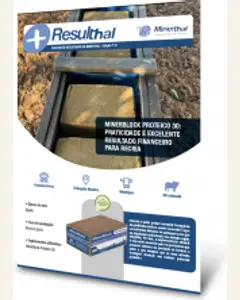
Edição mais recente · julho de 2024
O informativo da Minerthal com casos de fazendas clientes. Cada edição mostra a estratégia de suplementação usada no rebanho e o resultado medido: ganho de peso, prenhez, desmama e retorno financeiro.

61 edições
MinerBlock Proteico 30MGCorte
Baixar PDF da edição nº 61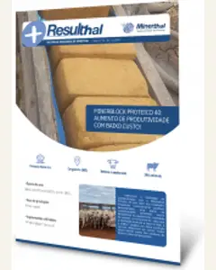
MinerBlock Proteico 40MSCorte
Baixar PDF da edição nº 60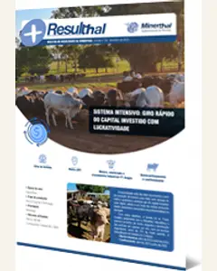
160 MDFlexbeef MD + MAXSPCorte
Baixar PDF da edição nº 59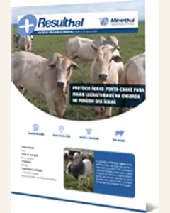
Proteico ÁguasMGCorte
Baixar PDF da edição nº 58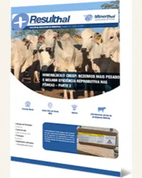
MinerBlock CreepMSCorte
Baixar PDF da edição nº 57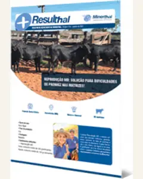
Reprodução MDMGCorte
Baixar PDF da edição nº 56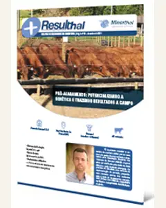
Pró-AcabamentoSPCorte
Baixar PDF da edição nº 55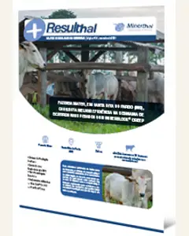
MinerBlock CreepMSCorte
Baixar PDF da edição nº 54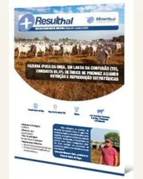
Corte
Baixar PDF da edição nº 53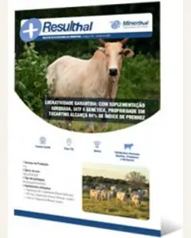
Corte
Baixar PDF da edição nº 52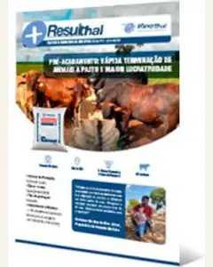
Corte
Baixar PDF da edição nº 51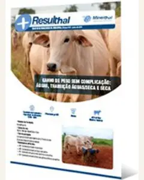
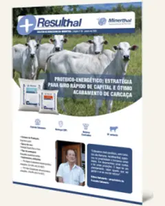
Corte
Baixar PDF da edição nº 49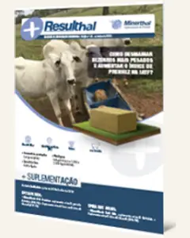
Corte
Baixar PDF da edição nº 48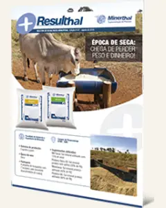
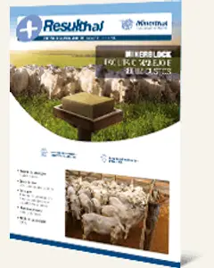
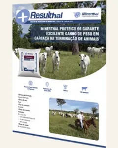
Minerthal Proteico 66Corte
Baixar PDF da edição nº 45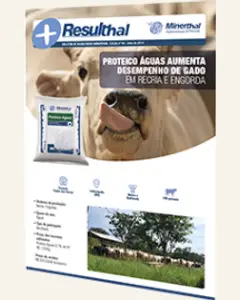
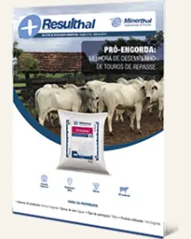
Corte
Baixar PDF da edição nº 43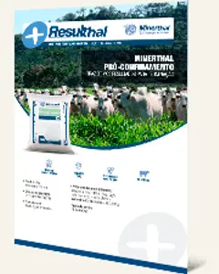
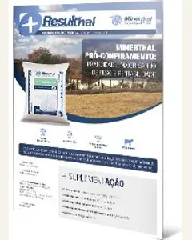
Minerthal Pró-ConfinamentoGOCorte
Baixar PDF da edição nº 41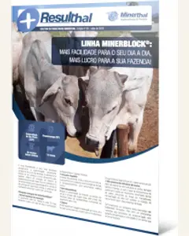
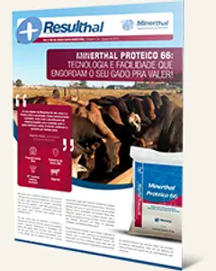
Minerthal Proteico 66GOCorte
Baixar PDF da edição nº 38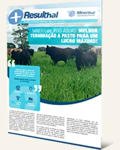
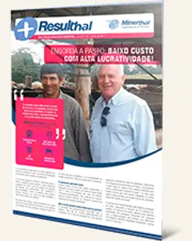
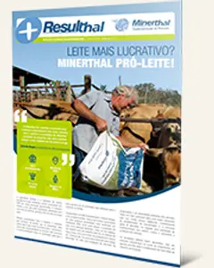
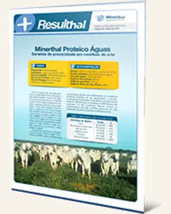
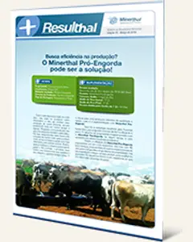
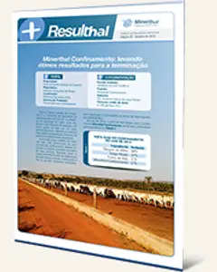
Minerthal ConfinamentoGOCorte
Baixar PDF da edição nº 32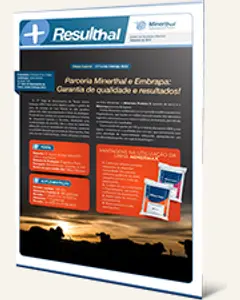
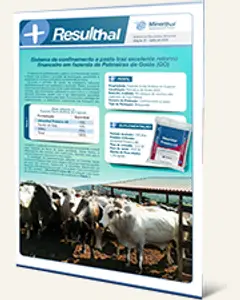
Minerthal Proteico 66GOCorte
Baixar PDF da edição nº 31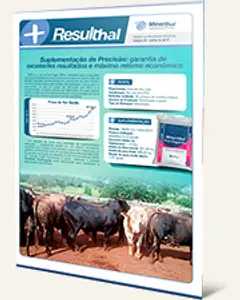
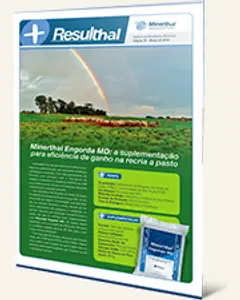
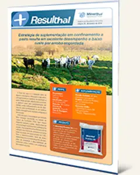
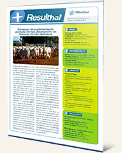
Minerthal CreepMinersecaGOCorte
Baixar PDF da edição nº 27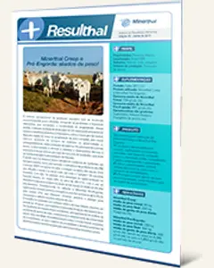
Minerthal CreepPró-EngordaSPCorte
Baixar PDF da edição nº 26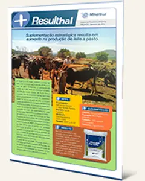
Pró-LeiteGOLeite
Baixar PDF da edição nº 25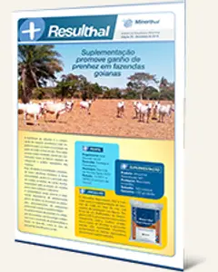
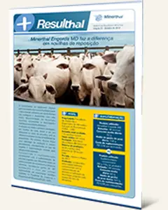
Minerthal Engorda MDSPCorte
Baixar PDF da edição nº 23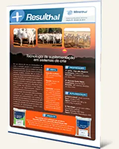
Minerthal MD SecaReprodução MDGOSPCorte
Baixar PDF da edição nº 22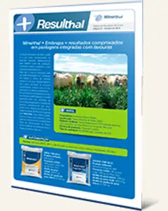
MinersecaMinerthal Engorda MDGOCorte
Baixar PDF da edição nº 21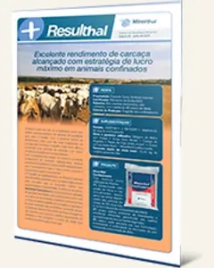
Minerthal ConfinamentoGOCorte
Baixar PDF da edição nº 20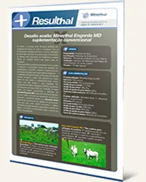
Minerthal Engorda MDGOCorte
Baixar PDF da edição nº 19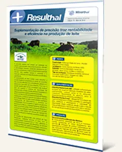
Núcleo Leite MDMinerthal CreepGOLeite
Baixar PDF da edição nº 18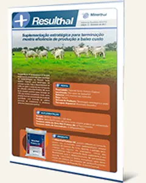
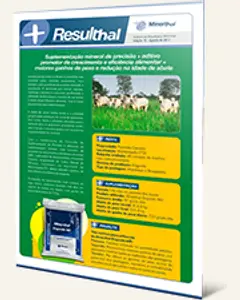
Minerthal Engorda MDTOCorte
Baixar PDF da edição nº 16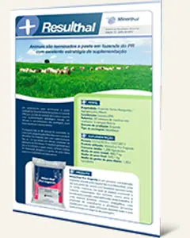
Pró-EngordaPRCorte
Baixar PDF da edição nº 15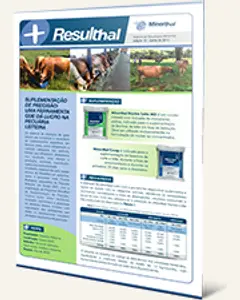
Núcleo Leite MDMinerthal CreepGOLeite
Baixar PDF da edição nº 14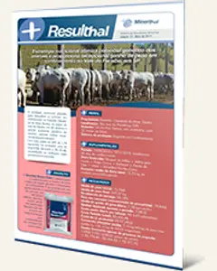
Núcleo CorteSPCorte
Baixar PDF da edição nº 13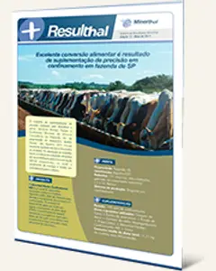
Núcleo Confinamento MDSPCorte
Baixar PDF da edição nº 12Minerthal Engorda MDPró-ÁguasPRCorte
Baixar PDF da edição nº 11Pró-EngordaGOCorte
Baixar PDF da edição nº 10Minerthal Engorda MDMinerthal Proteico 66SPCorte
Baixar PDF da edição nº 7Minerthal Proteico 66MTCorte
Baixar PDF da edição nº 6MinersecaMinerthal Engorda MDGOCorte
Baixar PDF da edição nº 3Minerthal Engorda MDGOCorte
Baixar PDF da edição nº 1Nenhuma edição com esses filtros. Tente outro produto ou estado.
É o informativo da Minerthal com casos de fazendas clientes. Cada edição descreve a estratégia de suplementação usada no rebanho e os resultados medidos, como ganho de peso, índice de prenhez, peso à desmama e retorno financeiro.
São 61 edições publicadas entre abril de 2010 e julho de 2024, incluindo uma edição especial sobre a parceria da Minerthal com a Embrapa, de setembro de 2015.
Os casos vêm de fazendas em Goiás, Mato Grosso, Mato Grosso do Sul, Minas Gerais, Paraná, São Paulo e Tocantins.
Cada edição está disponível em PDF, sem cadastro. Use os filtros por produto, estado ou sistema de produção e clique em Baixar PDF.
Conte o tamanho do rebanho, a fase e o sistema de produção. A equipe indica o suplemento para a sua fazenda.